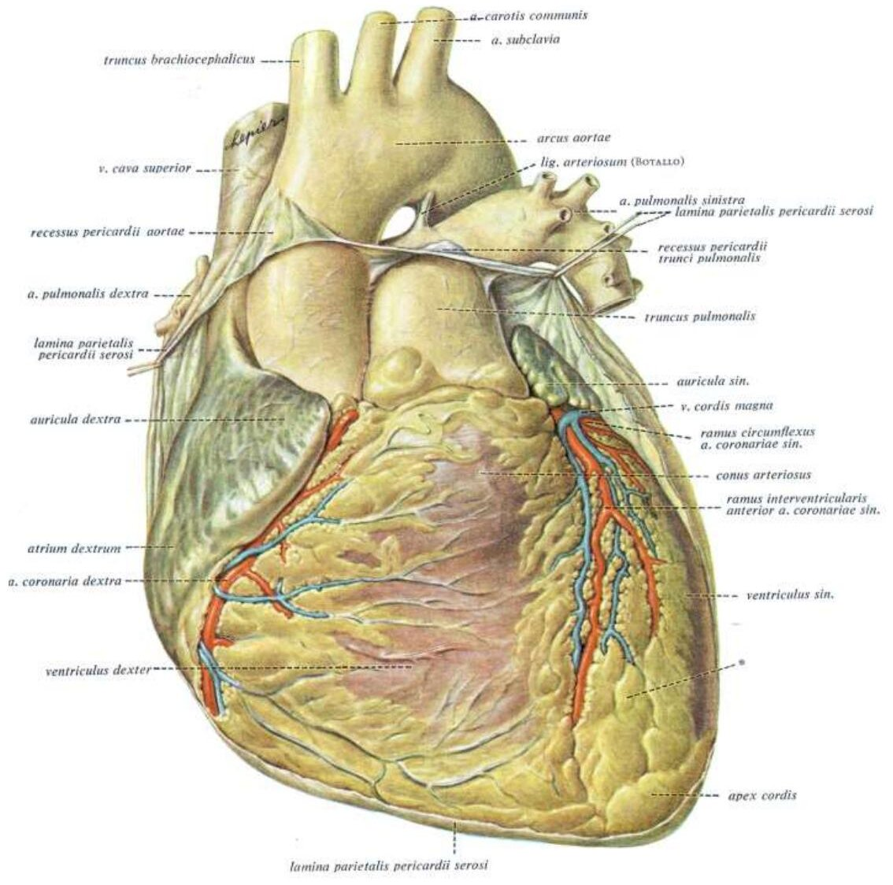

Bölüm 4 · Vasa cordis
Kalp, boşluklarından her dakika beş litre kan geçtiği hâlde bu kandan beslenemez. Duvarı, difüzyonun ulaşamayacağı kadar kalındır. Kalp kası kendi damarlarıyla, koroner arterlerle beslenir ve bu damarlardan birinin tıkanması dünyada en sık ölüm nedenidir. Bu bölüm iki koroner arterin dallarını ve besleme alanlarını, dominansı, anastomozları ve tıkanma ile infarkt arasındaki ilişkiyi, ardından kalbin venlerini ve lenfatiklerini anlatır.
Kalp kasını iki arter besler: a. coronaria dextra ve a. coronaria sinistra. İkisi de aorta ascendens'in başlangıç kısmındaki şişkinlikten (bulbus aortae), aort kapağının hemen üstündeki sinüslerden çıkar ve aortanın ilk dallarıdır. Ana gövdeleri ve büyük dalları epikardın altında, yağ dokusu içinde, kalbin dış yüzündeki oluklarda (sulcus coronarius ve iki sulcus interventricularis) seyreder. Dallar buradan miyokarda dik açıyla dalar ve içe doğru incelir. Bu düzenin klinik bir sonucu vardır: kanın ulaşacağı en uzak yer, endokardın hemen altındaki iç katmandır. Üstelik sistolde kasılan miyokard en çok bu iç katmandaki damarları sıkar. Bu yüzden koroner akım azaldığında ilk ve en ağır hasar subendokardiyal katmanda gelişir.
Kalp kası iki nedenle koroner akıma özellikle bağımlıdır. (1) Kalp dinlenmede bile kendisine gelen kanın oksijeninin yaklaşık %70-75'ini çeker. Başka dokular ihtiyaç arttığında kandan daha çok oksijen çekebilir, kalp ise zaten neredeyse sınırdadır. Kalbin artan oksijen ihtiyacı yalnızca koroner akımın artmasıyla karşılanabilir. (2) Sol ventrikül kası büyük ölçüde diyastolde kanlanır (Bölüm 3.6). Koroner arterlerden birinin daralması bu yüzden önce egzersizde (akım artırılamaz) göğüs ağrısına (angina pektoris), tam tıkanması ise beslediği kas bölgesinin ölümüne (miyokard infarktüsü) yol açar.
A. coronaria dextra sağ sinus aortae'dan çıkar. Önce öne ve sağa yönelir, auricula dextra ile conus arteriosus (truncus pulmonalis'in kökü) arasından geçer. Sonra sulcus coronarius'un sağ yarısına girer, kalbin sağ kenarını dolanarak arka yüze geçer. Arka yüzde sulcus coronarius ile sulcus interventricularis posterior'un kesiştiği noktaya (crux cordis) gelince r. interventricularis posterior'u verir ve bu dal kalbin tepesine doğru iner. Apekse yakın r. interventricularis posterior, a. coronaria sinistra'nın r. interventricularis anterior'u ile anastomoz yapar. Sunumdaki dalları ve görevleri şunlardır:
Beslediği alanlar. RCA sağ atriyumu, sağ ventrikülün ön yüzünün büyük kısmını, kalbin sağ kenarını, diyafragmatik yüzün sol ventriküle ait olan kısmını, septum interventriculare'nin arka üçte birini ve ileti sisteminin büyük kısmını (çoğu kişide SA düğümü ve AV düğümü) besler. Bu son ayrıntı klinikte önemlidir: RCA'nın tıkanmasıyla oluşan alt duvar (inferior) infarktüsünde AV düğümün kanlanması bozulduğu için bradikardi ve AV blok sık görülür.
A. coronaria sinistra sol sinus aortae'dan çıkar. Truncus pulmonalis ile auricula sinistra arasından sola ve öne ilerler. Kısa bir seyirden sonra (ana gövde, 1-2 cm) iki dala ayrılır: r. interventricularis anterior (sol ön inen arter, LAD) ve r. circumflexus (LCx). Bazı kişilerde ikisinin arasından üçüncü bir dal çıkar ve sol ventrikülün yan duvarına iner (ramus intermedius). Sol ana koroner arter kısa olduğu hâlde sol ventrikülün büyük kısmını besler. Tıkanması bu yüzden çoğunlukla ölümcüldür.
R. interventricularis anterior (LAD). Sulcus interventricularis anterior içinde, v. cordis magna'ya eşlik ederek apekse iner. Çoğu kişide apeksi dolanır ve arka yüzde r. interventricularis posterior ile anastomoz yapar. Dalları:
Sunumda LAD'ın r. coni arteriosi'si için "birinci diagonal arter olarak da isimlendirilir" yazmaktadır. Bu iki dal farklıdır: r. coni arteriosi conus arteriosus'a, yani sağ ventrikülün çıkış yoluna gider. Birinci diagonal (D1) ise sol ventrikülün ön-yan duvarına giden ilk r. lateralis'tir. Aynı slaytta r. lateralis için "sol ventrikülün arka duvarında dağılır" denmektedir. Diyagonal dallar sol ventrikülün ön-yan duvarını besler. Arka duvar LCx'in ve PDA'nın alanıdır. Sınavda iki ifade de sorulursa sunumdaki kalıp tanınmalı, ama anatomik olarak doğru olan budur.
LAD'ın beslediği alan sol ventrikülün ön duvarı, apeks, sağ ventrikülün ön yüzünün septuma komşu kısmı ve septumun ön üçte ikisidir. Sol ventrikül kas kütlesinin en büyük kısmını besleyen tek arterdir. LAD'ın başlangıç kısmındaki bir tıkanma geniş bir ön duvar infarktüsüne yol açar. Klinisyenler bu yüzden ona "dul bırakan" (widow maker) der (2024-2025: göğüs ağrısıyla gelen hastanın anjiyografisinde sol ventrikülün ön kısmındaki tıkanıklık r. interventricularis anterior olarak soruldu).
R. circumflexus (LCx). Sulcus coronarius'un sol yarısında, v. cordis magna'nın son kısmına eşlik ederek kalbin sol kenarını dolanır ve arka yüzde sulcus interventricularis posterior'un başlangıcına kadar uzanır. Dalları:
LCx kalbin sol kenarını ve sol atriyumu besler. Sol dominant kalpte PDA'yı da verir ve sol ventrikülün arka duvarı ile septumun arka kısmını da besler.

Koroner anjiyografideki adlar. Klinikte arterler kısaltmalarla anılır: LMCA (sol ana koroner), LAD (sol ön inen), D1 ve D2 (diyagonaller), septal dallar, LCx (sirkumfleks), OM1 ve OM2 (obtus marjinaller), RCA (sağ koroner), AM (akut marjinal), PDA (posterior inen), PLV (posterolateral sol ventrikül dalları). Anjiyografide arterler, ağızlarına kateterle verilen kontrast maddeyle görüntülenir. Sunumdaki anjiyografi görüntüleri bu adlarla etiketlenmiştir.
Dominans, kalbin diyafragmatik yüzünü ve septumun arka kısmını besleyen r. interventricularis posterior'un (PDA) hangi arterden çıktığına göre tanımlanır. PDA'yı RCA veriyorsa kalp sağ dominant, LCx veriyorsa sol dominant, iki arter birlikte veriyorsa kodominanttır. Dominans, arterin büyüklüğünü değil, arka yüzün kimden beslendiğini anlatır: sağ dominant kalpte bile sol koroner sistem kas kütlesinin çoğunu besler. Sağ dominans en sık görülen tiptir (Şekil 4.3). Sunumda bu oran RCA'nın beslediği alanlar için "%85-90 sıklıkla" ifadesiyle, septumun arka kısmı ile AV düğümün sol koronerden beslenmesi için "%15 sıklıkla" ifadesiyle verilmiştir.
Anastomozlar ve kollateral dolaşım. İki koroner sistem birkaç yerde birbirine bağlanır: apekste LAD ile PDA arasında, conus arteriosus çevresinde iki r. coni arteriosi arasında (Vieussens halkası), septumda ön ve arka septal dallar arasında ve sulcus coronarius'ta RCA ile LCx'in uç dalları arasında. Bu bağlantıların çoğu doğumda ince arteriollerdir. Bir arter aniden tıkandığında bu ince damarlar bölgeyi besleyecek kanı taşıyamaz ve koroner arterler fonksiyonel uç arter gibi davranır (Bölüm 1.2). Daralma yavaş ilerlerse (yıllar içinde aterosklerozda olduğu gibi) iskemik bölgedeki düşük oksijen bu anastomozların genişlemesini uyarır ve tıkanmış arterin alanı kısmen kollaterallerle beslenebilir. Aynı derecede tıkanmanın bir hastada geniş infarkt, diğerinde yalnızca angina yapmasının nedeni budur.
Tıkanan arter ve infarkt bölgesi. Besleme alanları bilindiğinde, elektrokardiyografide (EKG) hangi derivasyonlarda değişiklik olduğundan tıkanan arter tahmin edilebilir:
| Tıkanan arter | Ölen kas bölgesi | EKG'de etkilenen derivasyonlar | Eşlik edebilen bulgu |
|---|---|---|---|
| LAD | Sol ventrikül ön duvarı, apeks, septumun ön 2/3'ü (anteroseptal) | V1-V4 | Pompa yetersizliği, dal blokları (septal dallar His dallarını besler) |
| LCx | Sol ventrikülün yan duvarı (lateral) | D1, aVL, V5-V6 | Sol dominant kalpte arka duvar da |
| RCA | Sol ventrikülün diyafragmatik yüzü (inferior), sağ ventrikül, septumun arka 1/3'ü | D2, D3, aVF | Bradikardi, AV blok (AV düğüm dalı) |
Kalp iskemisinin ağrısı göğsün ortasında, sternumun arkasında, sol omuzda ve sol kolun iç yüzünde hissedilir. Bu ağrının neden kalpte değil de buralarda hissedildiği kalbin duyu liflerinin yoluyla açıklanır (Bölüm 5.4).
Kalbin venlerinin çoğu koroner arterlere eşlik eder ve dış yüzdeki oluklarda seyreder. Kalp kasından ve epikarddan gelen kanın büyük kısmını sulcus coronarius'taki sinus coronarius'a, oradan sağ atriyuma taşırlar. Kalan kısım iki küçük ven grubuyla doğrudan kalp boşluklarına açılır (Şekil 4.4). Sunuma göre sinus coronarius kalbin venöz kanının yaklaşık %60'ını, sinüse uğramadan doğrudan boşluklara açılan venler geri kalanını taşır.
Sinus coronarius sulcus coronarius'un arka kısmında, sol atriyum ile sol ventrikül arasında uzanan, 2-3 cm uzunluğunda, geniş bir vendir. Embriyonun sinus venosus'unun sol boynuzunun artığıdır (Bölüm 6.3). Sağ ucu ostium sinus coronarii aracılığıyla sağ atriyuma açılır. Bu ağız VCİ'nin ağzı ile ostium atrioventriculare dextrum arasındadır ve çevresinde yarım ay biçimli valvula sinus coronarii (Thebesius kapağı) bulunur (Bölüm 3.2). Sinus coronarius'a açılan venler şunlardır:
Sinus coronarius'a dökülmeyen iki ven grubu vardır:
Üç sınavda venlerin dökülme yeri soruldu. Sinus coronarius'a dökülmeyenler vv. cardiacae minimae ve vv. cardiacae anteriores'tir (2023-2024 S1). "Vv. cardiacae anteriores sinus coronarius'un sol ucundan açılır" ifadesi yanlıştır, çünkü bu venler sinüse hiç açılmaz (Derleme S51). Aynı soruda v. cordis magna'nın ve v. cordis media'nın apeksten başladığı, v. cordis parva'nın sinüsün sağ ucuna açıldığı ve vv. cardiacae minimae'nin bütün kalp boşluklarına açılabildiği doğru seçeneklerdi.
Kalbin lenf damarları endokard altında, miyokardda ve epikard altında üç ağ oluşturur. Bu ağlar koroner damarlara eşlik eden toplayıcı kanallarla tabana doğru akar. Sunuma göre sol ana toplayıcı kanal nodi tracheobronchiales'te, sağ ana toplayıcı kanal nodi tracheobronchiales inferiores'te sonlanır. (Bazı kaynaklar sağ kanalın mediastinal ya da brakiyosefalik düğümlere gittiğini yazar. Sınav için sunumdaki ifade esastır.)
Doğru: A. LAD sulcus interventricularis anterior'da apekse iner. Diyagonal dallarıyla sol ventrikülün ön ve ön-yan duvarını, septal dallarıyla septumun ön üçte ikisini besler. Sol ventrikülün ön duvarının infarktüsü LAD tıkanmasının tipik sonucudur.
B yanlış: PDA kalbin diyafragmatik yüzünü ve septumun arka üçte birini besler. Tıkanması inferior infarkt yapar. C yanlış: r. marginalis sinister (obtus marjinal) sol ventrikülün yan duvarını besler. D yanlış: r. marginalis dexter sağ ventrikülün dalıdır. E en iyi cevap değildir: sol ana koroner arter LAD'ı da verdiği için tıkanması ön duvarı etkiler, ama yalnızca ön duvarı değil, sol ventrikülün neredeyse tamamını (ön, yan ve çoğu zaman arka duvarı) etkiler ve çoğunlukla ani ölümle sonuçlanır. Soru tek bir bölgeyi, ön duvarı tarif ettiği için cevap o bölgenin arteri olan LAD'dır.
Doğru: A. Vv. cardiacae minimae doğrudan kalp boşluklarına, vv. cardiacae anteriores doğrudan sağ atriyuma açılır. İkisi de sinüse uğramaz.
I ve IV sinus coronarius'a dökülür: v. cardiaca parva sinüsün sağ ucuna, v. cardiaca media sinüsün sağ atriyuma açıldığı yerin yakınına. Bu yüzden I ya da IV içeren B, C, D ve E yanlıştır.
Doğru (yanlış ifade): D. Vv. cardiacae anteriores sağ ventrikülün ön yüzünden gelir ve sinus coronarius'a hiç dökülmeden doğrudan sağ atriyuma açılır. Sinüsün sol ucuna açılanlar v. cordis magna ve v. obliqua atrii sinistri'dir.
A ve C doğrudur: iki interventriküler ven de apeksten başlayıp ilgili oluk boyunca tabana çıkar. B doğrudur: v. cordis parva sulcus coronarius'un sağ yarısında seyreder ve sinüsün sağ ucuna açılır. E doğrudur: vv. cardiacae minimae bütün boşluklara açılabilir, çoğunluğu sağ atriyuma açılır.
Doğru: C. V. interventricularis anterior (v. cordis magna'nın ilk kısmı) LAD'a eşlik eder ve LAD'ın beslediği alanın, yani sol ventrikülün ön duvarının ve septumun ön kısmının kanını toplar.
A yanlış: v. cordis media arka interventriküler olukta, iki ventrikülün arka yüzünü drene eder. B yanlış: v. cordis parva sağ atriyum ve sağ ventrikülün arka duvarlarını drene eder. D yanlış: vv. cardiacae anteriores sağ ventrikülün ön yüzündedir. E yanlış: v. obliqua atrii sinistri sol atriyumun arka duvarındadır.
Doğru: E. Kişilerin yaklaşık %80'inde AV düğümün arteri (r. nodi atrioventricularis) crux cordis'te RCA'dan çıkar. Sağ dominant kalpte RCA aynı zamanda PDA'yı ve sol ventrikülün diyafragmatik yüzünü besler. RCA tıkanınca hem alt duvar infarktüsü hem AV düğüm iskemisi, yani AV blok gelişir.
A yanlış: LAD ön duvarı besler, alt duvar infarktüsü yapmaz (septal dalları His dallarını beslediği için dal bloğu yapabilir). B yanlış: LCx yalnızca kişilerin yaklaşık %20'sinde AV düğüm dalı verir. C yanlış: obtus marjinal dal yan duvara gider. D yanlış: r. coni arteriosi conus arteriosus'u besler.
Doğru: B. Dominans, diyafragmatik yüzü ve septumun arka kısmını besleyen PDA'nın kaynağıyla tanımlanır: RCA ise sağ, LCx ise sol dominans, ikisi birlikte ise kodominans.
A ve D yanlış: sağ dominant kalpte bile sol koroner sistem genellikle daha kalındır ve sol ventrikülün büyük kısmını besler. Dominans kütle ya da kalınlıkla tanımlansaydı neredeyse bütün kalpler "sol dominant" sayılırdı. C yanlış: SA düğüm dalının kaynağı dominanstan bağımsızdır (sağdan %60, soldan %40). E yanlış: ana gövdenin uzunluğu dominansı belirlemez.